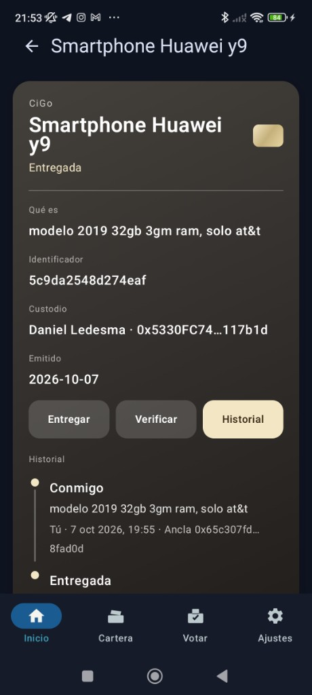
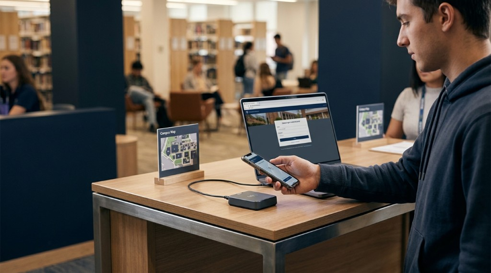

Wallet on the phone
International recognition: WSIS Forum hackathon (ITU / United Nations)
An unforgeable credential on your community's phone.
It replaces plastic cards and lost badges with a digital credential on the phone. At the gate, access control checks the registry and leaves the log: who entered, who is still inside and how long they stayed. The desk cycle is about 10 seconds, with an NFC reader or the laptop camera.
Setup guided by the founder · A standard NFC reader on the PC · The desk is the organization's laptop.
Control desk on the laptop
On the left, the wallet on the phone. On the right, the desk on the laptop: whoever presents is written into the log, with the time and the result.
Pioneer call · 50 pilot passes
Pioneer organizations ready to leave PVC behind.
A pilot of 50 credentials for universities, residences and unions. The founder helps set up the desk, and the plan is built from the community's real volume.
Universities — student identity
Condominiums — access and assemblies
Unions and professional bodies — roll and quorum
Desk · Access
The desk knows who is still inside.
Whoever runs the door sees the day's entries, the exits and the open visit: name, credential and since what time. The book can be searched and downloaded as CSV.
Desk log
Certainty about who is inside.
Every presentation is written to Access. The desk counts the day, separates entries and exits, and keeps the open visit in front of whoever runs the door.

Inside now
Name, credential and since what time. When the person leaves, the guard records the exit on that same line.
How long they stayed
Closed visits for the day show the duration, in minutes or under a minute. Entries and exits are counted above.
What they presented and where they were going
The book records the credential, whether they passed, the channel and who attested. If the desk captures it, the destination and the place are recorded too.
One day per table. The time is Mexico City time. The book stays in that browser and only for the wallet that signed in. Search by name or credential, and download CSV.
At the desk
Issuance and validation with the person present.
CiGo does not email a file for people to pass around. The administrator opens a challenge on the desk and the person signs it from their phone, by NFC or with the desk QR.
Issuance with a challenge, in person
The administrator generates the challenge in the desk app. The person presents the wallet on their phone and signs that challenge.
- The credential is bound to that phone's keys.
- The administrator does not take the person's keys.
Validation at the desk (~10 seconds)
The organization uses its laptop with the CiGo desk, a commercial NFC reader, or the camera for the QR.
- Approach, read, and the line left in Access: time, result and credential.
- The confirmation runs on the organization's laptop.
The challenge signature is secp256k1. The phone vault and the homomorphic vote are in the technical note.
Operational comparison
Against the plastic card.
A PVC card is printed, lost and replaced. CiGo issues it in person and validates it at the desk.
| PVC card | CiGo | |
|---|---|---|
| Issuance | Print shop and hand-out. | ✓A challenge on the desk. The person signs from their phone. |
| Door | A physical card or a paper list. | ✓The organization's laptop, a USB NFC reader, or the camera for the QR. |
| Loss | Reprint and hand it out again. | ✓The previous credential is revoked and another is issued in person. |
| Cycle | Days at the print shop. | ✓A check at the desk in about 10 seconds. |
| Roll | A separate CSV or list. | ✓Each credential matches the phone that signed the challenge. |
Impact estimate
The plastic and the PVC spend you can stop repeating.
Move the parameters. The result is an estimate for deciding on the pilot, not a print-shop quote.
On the same phone
The credential opens the rest.
Tickets, voting, documents and things are not separate sites. They live in the CiGo wallet, bound to the same identity.

Present
The person brings the phone to the reader, or shows the code if the desk has no NFC. The identity credential stays in the wallet.

Tickets
The pass is presented, transferred once, or returned to the box office. Once it has gone through the door, it cannot be transferred or returned. The price is face value.

Vote
The ballot asks for a valid credential. The receipt does not say the choice. The transaction and the period remain.

Documents
The signature is the credential subject's. The file hash is the proof, and the link names that credential.

Things
An object carries a passport: what it is, who holds it and when it was handed over. The history changes hands without a loose PDF.

The code expires
The ticket presentation lasts a few seconds. A screenshot in the group chat arrives late: once someone enters, the ticket can no longer be transferred.
Where it is used
The gate, the classroom, the assembly and the line.
The desk is the organization's laptop and a USB reader, or the camera. These scenes show the job, not a required turnstile.

University
Library and lab
The student presents the phone. The person at the desk sees the confirmation on the laptop.

Condominium
Couriers without leaving their ID
Today a food courier leaves their government ID at the gate to enter the condominium or the parking lot. With CiGo they present the credential on their phone. The guard reads it on the laptop. The physical ID does not stay on the desk.
Union and assembly
The vote comes from the phone
The assembly opens to whoever holds a valid credential. The receipt does not publish the choice.

Venue
The line and the ticket
At the door, the laptop camera reads the signed presentation. The same screenshot, the second time, does not get in.
Technical questions
Questions from directors and administrators.
Issuance, hardware, and what the desk laptop does.
What happens if the gatehouse loses internet?
The gate stops. The desk checks the registry anchored on the chain to see whether the credential is still valid. Without internet, that check does not close and there is no pass. The person does not need internet: the CiGo wallet carries the credential on the phone.
How is it issued so someone else cannot keep the pass?
The administrator opens the challenge on the desk and the person signs it from their phone, by NFC or with the registration QR. The credential stays bound to that phone's keys.
Why does validation take about 10 seconds?
The cycle we measure includes bringing the phone close, the NFC read or the QR focus, the signature check on the desk and the line the guard sees in the log. That cycle is above: the wallet on the phone and the desk on the laptop.
What equipment is required?
The organization's computer running the CiGo desk, internet at the gate, and a USB NFC reader or the camera for the QR. The desk does not require a turnstile or a separate server.